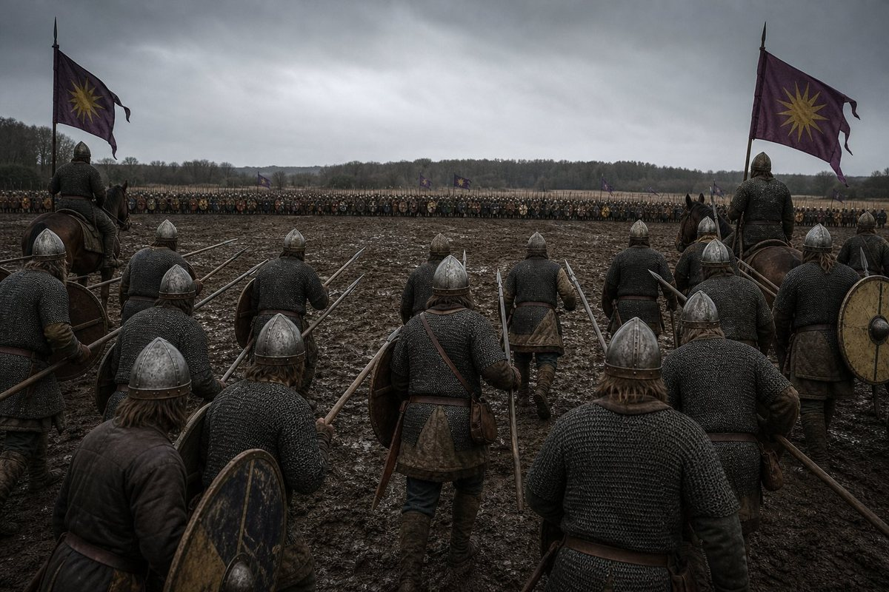
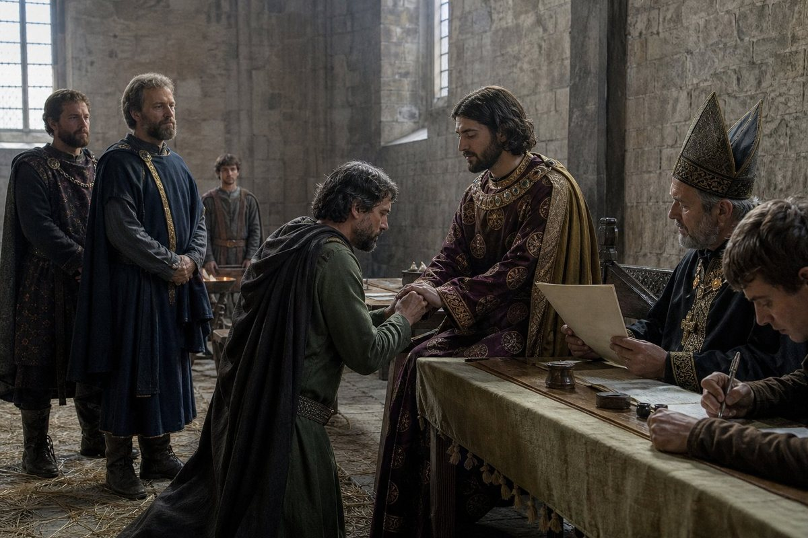
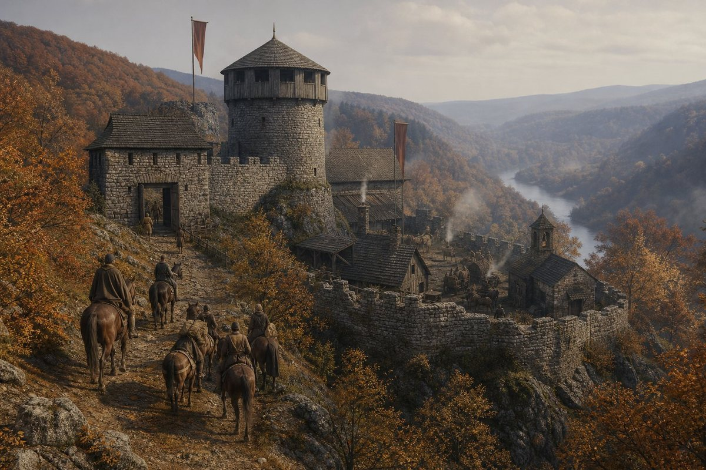
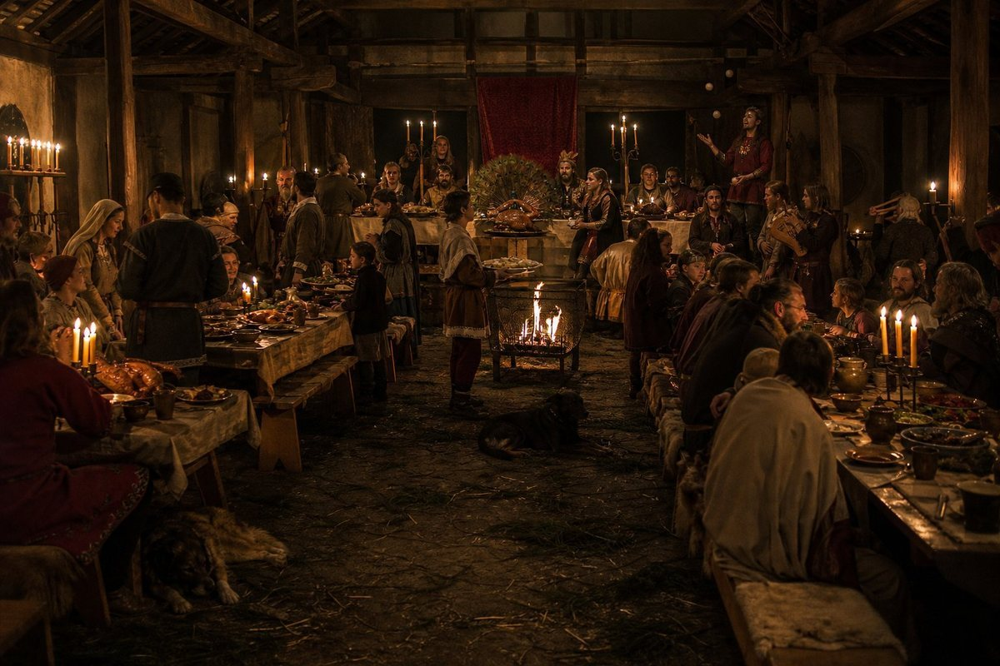
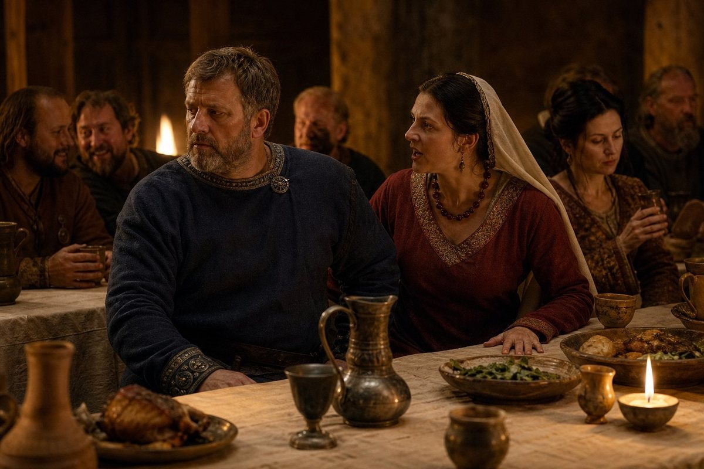
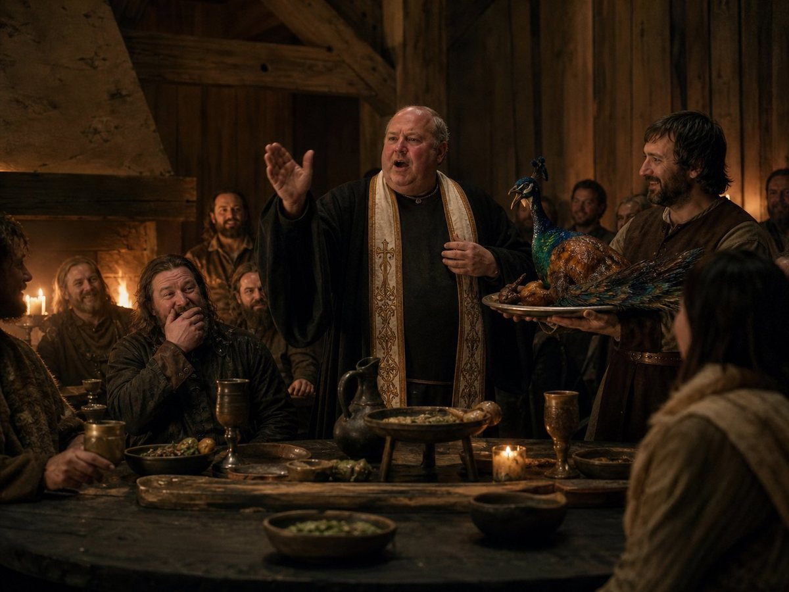
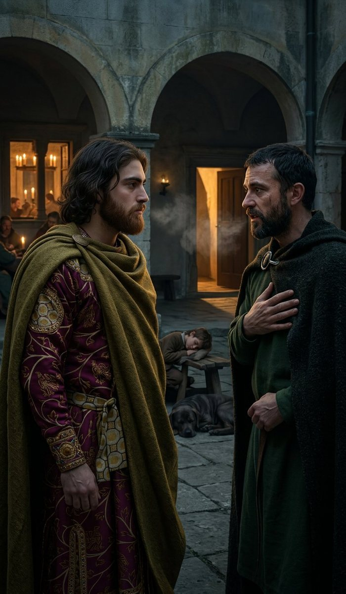
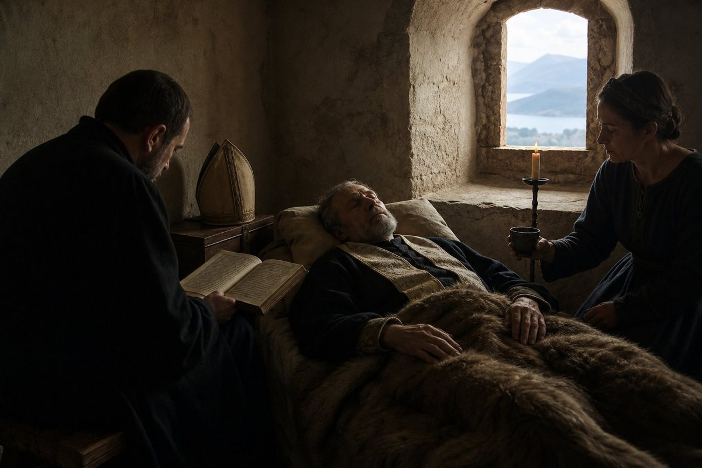

The third month of 924
In the third month of 924 the fourth war for Hesse was ten months old and had not been fought.
I want to begin there, because the reader who has come through the last four chapters has had a lesson in silences and this chapter ends them. The war was declared on the sixth day of the fifth month of 923. The first battle in it was fought on the first day of the fourth month of 924, three hundred and thirty-one days later. In between there is nothing in the record: no march, no siege, no numbers, no dead. A war declared, a rising finished, a King at Rome for eight months of it, and a border that sat still through a winter.
What that is, in the language of this trade, is a war of position on a frontier where both sides have other things to do. Karl of East Francia had lost a holy war by holding in the tenth month of 922 and had been at war with this crown since 919 in one form or another, and the King of Bavaria had been in Rome. Nobody moved because nobody was there to move.
And then, in the spring of 924, the record starts giving me numbers again. Four battles in this chapter and the next three, with the dead counted on both sides, and I want the reader to understand what a relief that is and what a trap, because a number in a chronicle is not a fact about a field, it is a fact about a clerk, and I am going to spend this chapter doing what I have done with every silence in this book: standing the arithmetic up and looking at what it is standing on.
Diez, the first day of the fourth month
On the first day of the fourth month of 924 the army of Bavaria fought the army of East Francia at Diez: two thousand and thirteen of ours against one thousand and sixty-nine of Karl's, and four hundred and sixty-six of ours were killed and three hundred and thirty-five of his.
Those are the record's numbers and I am not going to touch them. What I am going to do is put them in a column with every other battle this book has given numbers for, because this is the first battle in five years in which both columns are full, and the comparison is the whole of what I know about war.
At Diez we had nearly twice his men and we lost nearly half again as many of ours as he lost of his. Four hundred and sixty-six out of two thousand and thirteen is one man in four. Three hundred and thirty-five out of one thousand and sixty-nine is one man in three. He lost a third of his army and we lost a quarter of ours, and he lost the field, and the record does not say so, and it does not have to: an army that loses a third of its men in a day and does not appear again for four months is an army that has been beaten.

Here is what a quarter of an army is. Two thousand and thirteen men went to Diez. It is nine in the morning and the line is four hundred paces long and the men in it are the household troops of a kingdom and the levies of eleven counties. By the evening four hundred and sixty-six of them are dead, and another number, which the record does not give and which in my experience is between one and two times the dead, are wounded and will be carried off the field and will mostly live and will none of them be the same.
I have been at the surgeons' tables at Lengenfeld and at Speyer and at Koblenz and at Turnu. I know what four hundred and sixty-six looks like from the second table with a saw in my hand, and I am going to write it down once in this volume because the record has given me the number and the number deserves it: it looks like three days, and after the three days it looks like a list of names that somebody has to write out twice, once for the ledger and once for a woman in a village who cannot read either.
Siegen, the first day of the eighth month
On the first day of the eighth month of 924 the army fought again, at Siegen: two thousand seven hundred and eighty-three of ours against eight hundred and sixty-eight of his, and two hundred and sixty-five of ours were killed and two hundred and seventy-three of his.
That is the strangest line in the chapter. We had three times his men. We lost almost exactly as many as he did, and one more man of his died than of ours, which is the only time in five volumes that the enemy's dead exceed ours in a battle we won by three to one.

I have asked four men who were there and none of them could tell me why. The answer I believe is dull and I will give it as mine: eight hundred and sixty-eight men in a good position on ground they had chosen can kill two hundred and sixty-five of anybody before they are broken, and a general who has three times the men is a general who is going to spend them, because the arithmetic of three to one tells him he can. You cannot see a battle. Nobody has ever seen one. What you see is forty paces of a hedge and the men in it, and behind you there are more men than you need, and the whole of the art is in knowing which of the men in front of you have to die so that the ones behind them do not run.
The first day of the tenth month
On the first day of the tenth month of 924 Čáslav joined the realm under a man called Hartwig.
That is the whole of the entry and I have nothing to add to it, and I am putting it in on its own because it is the first of five grants in two days and because it tells the reader something about how a medieval border actually moves. Čáslav joins. Nobody is conquered and nobody is killed; a lord with a county brings it in under a lord with a kingdom, and the reason is not in the record and is not going to be invented, and the effect is that a line on a map that has not moved in four years has now moved and will move four more times before the month is out.
The second day of the tenth month
On the second day of the tenth month of 924 the war for Hesse ended.
Fulda and Kassel went to Euxenippos. Marburg and Nassau came in under Friedrica and Udo. And the Kingdom of Bavaria, which on the fifteenth day of the eighth month of 922 was eighty-eight counties and the eighth largest realm of six hundred and thirty-three, was ninety-three counties.

Eighty-eight to ninety-three. Five counties, and the first time since the seventh month of 920 that a number at the front of a chapter has gone up instead of down. I have been writing this book for five volumes on a ledger that mostly records losses — a county lost at Bereg, three counties annexed at Hall, eight counties taken off the crown by a custom — and here is the page where the crusade of a boy of twenty-one becomes an addition.
I want to be careful about what was won and what was given. Fulda and Kassel are two counties in Hesse, given to a man called Euxenippos of whom the record says nothing else in the world, and who is the first Euxenippos in this book, which has had a great many Philips and more Ludwigs than is decent. Marburg and Nassau did not go to a lord of the crown's making; they came in under Friedrica and Udo, who were already there, and who are now the crown's men in a way they were not in the ninth month.
That is how this realm grows. Not by settlement and not by a nation deciding to be one: by five men in a room in the tenth month, four of them keeping what they already held and one of them given a county for a war, and a clerk writing ninety-three.
And here is the thing I must put beside it, because the last chapter of this volume is going to be about what happens to Friedrica and Udo and the men like them. In the seventh month of 920 a custom took two thirds of the crown's own lands and gave them to six boys. In the tenth month of 924 the same crown took five counties off a beaten king and gave them to five men, and there is not a child in the list, and the men have their own households and their own grievances and their own reasons, and the record calls them vassals and the word is a lie of convenience, as it has been since the first page of this book.
The realm is bigger. I do not know yet whether it is stronger. The record I work from runs past the end of my life, and in it, in the fourth month of 930, one of these men is standing in a field against the crown. I will not be there to write that chapter. Whoever holds this pen then should know that I wrote this one and thought it was good news.
The seventh day of the eighth month
Six days after Siegen, on the seventh day of the eighth month of 924, the King of Bavaria left Regensburg for a wedding in Croatia, and he arrived at Modruš on the third day of the tenth month.
Six days after a battle in which two hundred and sixty-five of his men were killed, and he went to a wedding. I want that sentence to stand exactly as it is, because there is a version of this book in which it is a scandal and a version in which it is statesmanship, and the record does not choose and neither do I.
The war ended on the second day of the tenth month. He arrived at Modruš on the third. Two hundred and sixty-five men were killed at Siegen in the eighth month and the peace that ended the war was sealed on the day before he rode into a Croatian castle for a wedding that was going to last eight months.

Modruš
Modruš is in Croatia, in the mountains behind the coast, and the wedding was the grand wedding of the year in that country and it lasted from the eighth month of 924 to the sixth month of 925.
The host was Count Ladislav of Modruš, and the King of Bavaria was a guest. That is the first thing to understand about the eight months: this is not the King's wedding, not his country, not his hall, and the record's eye for the whole of it is the eye of a man being entertained.
I have never been to anything like it and I have been to a coronation. Two hundred people at Regensburg in the frost, in a room built for one hundred and fifty; a tournament at Heves that ran six months; a Recital at Ráb where his father won a crown of leaves. This was eight months in a castle in the mountains with a count's household, a chaplain, a great many guests of the Croatian and Hungarian sort, and a record that remembers the food, the drink and the quarrels.

That is the second thing to understand, and it is why this chapter is going to be peculiar: for the first time in five volumes, the record is funny. Not because the King is funny and not because I am. Because a chancery that has been writing about risings and regiments for four years was, for eight months, writing about a wedding, and it wrote down what everybody said.
The couple the record does not name
The record does not name the couple.
I am going to write that on its own line, in the way I wrote the sentence about Pramda giving me the ledger, because it is the sort of thing this book has to say out loud or not at all. A grand wedding, eight months of it, a hall full of guests, a chaplain who makes a joke about smoothly polished sticks, and the record does not give the names of the two people it was all for.
There is one obvious candidate and I have ruled it out. Ladislav of Modruš, the host, remembers his own wedding three times in the eight months, which is what a man does when the wedding he is host of reminds him of his own; so it is not Ladislav's.
Beyond that I have nothing. Not their houses, not their countries, not their ages, not which of them was the reason for it. I have written four hundred pages of this history on the principle that a gap in the record is a gap and not an invitation, and I am going to hold to it in the middle of a party as firmly as I held to it at Sayn.
What the record does give is the room. And a room is enough for one chapter, because the room is where the King of Bavaria spent eight months of a year in which he became ninety-three counties.
The ninth day of the first month
On the ninth day of the first month of 925, in the hall at Modruš, Countess Mirna, the wife of Ladislav, called her husband a cur in public.
A cur. That is the word, and I am going to leave it as it stands, and I want the reader to sit with it for a moment as I have. This is the wife of the host, in her own hall, in front of the guests of a grand wedding, and she called him a cur, and one of the guests had a clerk who wrote it down.

I do not know what he had done. The record does not say and the hall presumably did, and every man and woman in it must have understood the sentence completely, and we are eleven hundred years away and we have four words.
What I can say is what a hall does. There is a noise after a thing like that which is not laughter and not silence: the benches go on creaking, somebody's cup goes down too hard, two people start talking at once about something else, and the man who has been called it goes on eating. I have seen it in three countries. It is the most expensive thing a person can do in a public room, and it is done by people who have decided that the cost is worth it.
The twentieth day of the first month
On the twentieth day of the first month of 925, the Byzantine Emperor Sebastianos died after eating poisonous plants by mistake.
I put that in the middle of a wedding chapter because that is where it belongs. A man in Constantinople sat down to a dish he should not have eaten, and died of it, and the record of the Kingdom of Bavaria, in a castle in the mountains of Croatia, wrote it down in the middle of the fish course.
His successor is Alexandros the Proud, and the record notes that within a year the Kingdom of Bavaria will have a border with him. I have written in this book that the empire is the one neighbor that makes this realm look like what it is: a kingdom of eighty-eight counties, and now ninety-three, on the edge of a thing of a hundred and seventeen that has been there for six hundred years and does not care what language a king prays in.
The twenty-seventh day of the second month
On the twenty-seventh day of the second month of 925, Count Ladislav and Countess Mirna fell in love at first sight.
Seven weeks after she called him a cur in front of the hall, the record enters that they fell in love at first sight, and I have read those two entries side by side more times than any two entries in this volume.
I could write this as a joke about marriages and I am not going to, because there is something in it that is more interesting than a joke and it is the only thing in this whole chapter I would defend in front of a room.
The record is a chancery. It writes dates, counties, dead men and words about people. It does not write interior things; it has never once told me what a man was thinking. And twice in seven weeks it wrote down something that happens inside two people and cannot be seen from outside, and it wrote the second one with the phrase that every language has and no chronicle uses: at first sight.
Somebody in that castle was watching. Somebody saw a woman who had called her husband a cur in the first month look at him across a hall in the second, and thought: that is what has happened, and wrote it down, and it went into the record of a kingdom eleven hundred miles away and is here now.
I do not know whether they were happy. The record does not say and I am not going to write an ending for them. What the record does hold, past the end of this chapter, is that the King of Bavaria takes Modruš off Ladislav in 927 and has him in a cell by 930; and the woman who called her husband a cur in the first month and then fell in love with him at first sight is in the record's margins somewhere afterwards and I have not found her. That is not a tragedy and it is not a joke. It is what a chancery does to a marriage.
Andrija, the peacock and the goose
Now the comedy, which the record supplies and I do not have to invent, and I am going to give it in the order it happened because the order is the joke.
The court chaplain was called Andrija. In the eighth month, or some time in the autumn, he lambasted the roast peacock.
Lambasted. I do not know whether that means he denounced it from the pulpit of the hall as a vanity, which is what a chaplain would do with a peacock, or whether it means that he ate it and then said something about it, which is what a chaplain would do with a peacock if the cook had got it wrong. The record's verb is the record's verb. What is certain is that a bird came to the high table at a wedding in Croatia and a priest made a speech about it.

Then he told a joke about smoothly polished sticks.
I am not going to explain the joke. I do not know it. It is a joke of the year 925 in a language I do not have, told by a chaplain at a wedding, and it was written down because it was written down, and everything I could add to it would be a joke of mine, and this book has one of those already and it is about a cat.
Then he choked on a goose bone.
Not died. The record does not say died, and I have checked, four times, because it would have been a better story and I am not above wanting a better story. He choked on a goose bone at a wedding at which he had denounced a peacock and told a joke about sticks, and he is not in the record again, and whether he was carried out coughing or went on with the evening I do not know.
That is the first laugh in five volumes and it is not mine. I want the reader to notice what has happened: a chancery which has spent four years writing four battles with no dead in them and a peasant rising in one line has just written three sentences about a priest, a peacock and a fish course, and it did it because somebody at the table thought it was funny and put it down.
Bourgogne and Matija
Two more, and they are the two kinds of person at every wedding in the world.
Bourgogne was reprimanded for being drunk and disorderly. That is the whole entry, and I do not know whether Bourgogne was a man or a woman, a guest or a servant, a lord of the country or a cousin from somewhere else, and I have decided not to know, because the record did not think it worth telling me and the reader can see the scene without it: somebody has had too much of a Croatian wine in the second month of a long winter wedding, has said or broken something, and has been spoken to about it by somebody with the authority to do it.
Matija made a scene about the lavishness and the unchaste mingling.
That is a different animal and I know it from every hall I have ever eaten in. There is always one person at a great feast who has decided that the feast is an accusation, and who stands up and says so, and the reason is never the feast. Matija's two complaints are the two complaints: too much money spent, and the wrong people sitting too close together. I have heard both made at a tournament in Hungary and at a Recital in Ráb and once, memorably, at the coronation of a king, by a bishop, in the second person.
The record does not say whether Matija was a man or a woman either. I notice that the chancery of Bavaria, which gives me the ages of kings and the number of dead at Diez, was at Modruš for eight months and wrote down no one's rank at all. What it wrote was what people did. I have been in this trade for forty years and I have never once seen a document that told me more about a room.
The third day of the fourth month
On the third day of the fourth month of 925, the King of Bavaria and Count Slavich of Usora sneaked out of the banquet to talk, and became friends.
Sneaked out. The record says so. A king of twenty-two and a count of a country that this book fought a war over in 903 left a banquet in the fourth month of 925, in the middle of a wedding, to talk where nobody could hear them, and came back friends.

I want to notice the word friendship, because it is the second interior thing the record has given me in this chapter and it is rarer than love. This book has had alliances, oaths, pledges of loyalty, service, treason, four lords who would not swear and a Pontifex who led the pledges in a hall; it has not had a friend in it since the company. The King of Bavaria is twenty-two and has one friend in the record, and he got him by walking out of a party.
What they talked about is not in the record and is not going to be invented. Usora is in the north of the Croatian country, on the river, and it is the county this company took for Iljko the Monk in the second month of 903 and it has been held by somebody else ever since, and Slavich holds it now. Three months after this wedding the King of Bavaria will be at war with Croatia, and whether Slavich of Usora was in that war or on which side is not in the record I have, and I am not going to pretend it is.
The thirteenth day of the fourth month
On the thirteenth day of the fourth month of 925, ten days after that, Pontifex Prijezda died of illness at Modruš. He was fifty-six.
I have to stop the wedding for this and I am going to stop it properly, because Prijezda is the third man of the old company to die in this volume and the biggest of the three.

He came into the company before I did. He was given the war for Bereg at Vidin in the ninth month of 887 and fought it for four years, four companies of ours against Domoszló the Brute, and he took it in the tenth month of 889 and it was the company's first great victory that was not the Captain's. At the coronation in Regensburg in the twelfth month of 907 the record calls him Pontifex Prijezda. In the eleventh month of 920 he led the pledges of loyalty in the hall, and I was at the back of that hall, and I have written about it twice: the old King dead, the boy on the throne, a count of four months, a man called the Wicked, a woman who had just crowned the King, and Prijezda in a mitre reading out the oaths of twenty-five lords.
He was Duke of Austria. He died of illness in a castle in Croatia in the fourth month of 925 while his King was a guest at a wedding, and Austria passed to Vasilka, who is the widow of a man called Zenon who was murdered at Trubending in the ninth month of 911, and who stayed when she could have gone, and whose son is called Kaisarios.
That is the whole of what the record gives me and I am going to add one paragraph of my own, marked as mine.
Of the company that came out of the north in 879 and made a kingdom out of a contract, four are left who matter to this book: Slavac, Kyriake, Yehudis, and me. Prijezda was the one who made it respectable. A company of hired swords that ends up with a Pontifex, a duke and a rite of its own in the chapel of a Bavarian king has done something that no company in the history of the trade has ever done, and it did it by putting a man in a mitre who had spent his twenties fighting Domoszló the Brute in the marshes of Bereg.
He was fifty-six. That is not old. He died of an illness in the fourth month of a wedding, and his duchy went to a widow, and the crown that he had blessed in a hall in 920 was ninety-three counties and about to make its King August.
The fifth day of the fifth month, and the first day of the seventh
On the fifth day of the fifth month of 925, the King of Bavaria became a Confider.
On the first day of the seventh month of 925, he became August.
I have written about the chancery's words twice in this volume and I am going to write about them once more and then stop, because these two are not like the others.
A Confider is a word about a man's manner, and it is the record's way of saying that people tell him things. He is twenty-two, he has just spent eight months in somebody else's castle being entertaining, he has made a friend by walking out of a banquet, and a clerk has decided that the word for him now is the one that means men confide in him.
August is not a word about a manner. August is a title. It is the word that the emperors of the Romans had, and it has not been on the head of a king of Bavaria before, and it is not a thing a chancery gives a man for being pleasant in a hall.
I do not know what happened on the first day of the seventh month of 925 and neither does the record, which gives me a date and a word and no ceremony, no crown, no bishop and no hall. There is no coronation in it. A man of twenty-two who has been a king since he was nineteen, whose realm has just gone from eighty-eight counties to ninety-three, who is called August in the seventh month of a year in which he buried his Pontifex, got the word somewhere and the record does not say where.
What I will say, and mark as mine, is that it is the exact opposite of his father. Edouinos Silviades was thirteen years a king and never once August, and he took a kingdom in Latin Europe with a church against him and held it, and the chancery's words for him at the end were Pilgrim and Mystic and a great many others, and never that one. His son got it at twenty-two, in a summer, at a wedding, in a country that was not his, and the record gives it a line.
I have written in this book that the father made a story that would hold a kingdom together and the son is making himself into a man who can hold it without one. Here is the page where the son starts being given the words instead.
The year, and the four subjects
This chapter ends at the sixth month of 925, when the wedding at Modruš was over and the King came home, and I am going to do what I have done at the end of every chapter of this volume.
The first subject was the old King's last years and his death. This year took Prijezda, who was the company's Pontifex, the Duke of Austria, and the man who read the oaths in the hall in 920. There are four of that generation left and I have named them and I am not going to name them again until the next one dies.
The second was the rise of Antiphates. Ninety-three counties, five of them won in a war with numbers in it and given to men rather than children. A friend made in a courtyard. A wife's cousin's wedding attended for eight months. And two words from the chancery, one of which is the word the emperors use.
The third was the rebellion. There is no rising in this chapter and it would be dishonest to pretend there was. What there is, is the material of the next one: Friedrica and Udo and Euxenippos and Hartwig, four men in four counties who are the crown's men in the tenth month of 924, and one of whom will be in a field against the crown in the fourth month of 930.
The fourth was the precarious kingdom. And here, for the first time in this volume, the arithmetic runs the other way: eighty-eight to ninety-three, and a war won, and a wedding that did not cost a county. I have written five chapters of this volume in which the realm held by losing nothing. This is the chapter in which it held by gaining, and I want the reader to notice how much less comfortable I am writing it.
Because I do not know what five counties in the tenth month of 924 cost. The record gives me the grants and the counties and the new vassals, and it does not give me one line about the men who did not get a county, or the counties that were promised and not given, or what Euxenippos had to be told to make him take Fulda and Kassel and hold them for a king of twenty-two who was at a wedding in Croatia. A realm that grows has a bill and the bill is never in the same page as the grant.
I am sixty-seven years old. I have kept this ledger for six years. I have written in it that a kingdom of arrangements can be run from a bed and that a mill that runs without a miller runs until the first flood, and this year the mill ran and the flour came out and nobody drowned.
*Here ends the fifth chapter of the fifth volume, at Regensburg in the eighth month of the year of grace 925, in the hand of Laurentios of the company, born above the Gulf of Corinth in 858, who was at Diez and at Siegen with the saw and the pitch, who was in the hall at Modruš for eight months and heard a countess call her husband a cur and heard a chaplain choke on a goose bone, who buried Prijezda of the company in a country that was not his own, and who has now written a chapter in which the Kingdom of Bavaria gained five counties and lost the man who blessed it.*